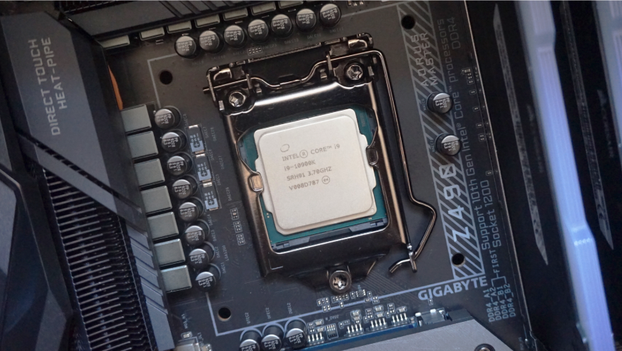
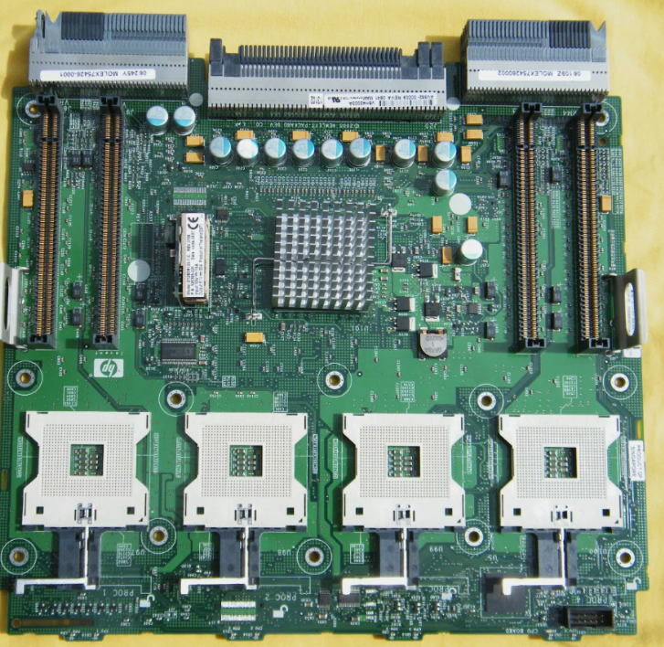
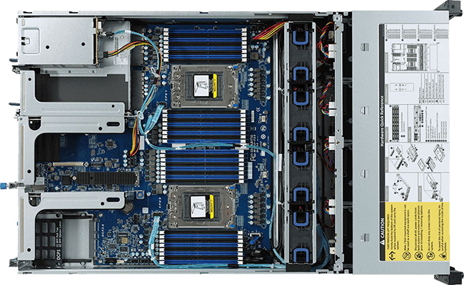
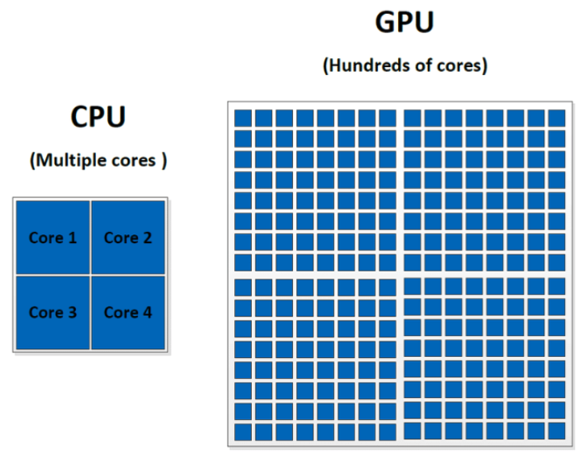
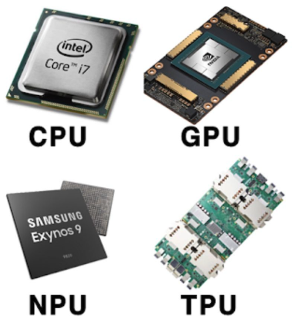
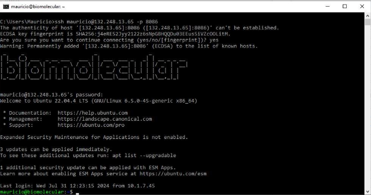

Unidad 3. Servidores de Alto Rendimiento (HPC)
Diferencia entre CPU y Servidor
Uso
Servidor: optimizado para alojar aplicaciones y datos, y proveer acceso a ellos desde otras computadoras clientes en una red.
Computadora personal (PC): diseñada principalmente para uso individual (ofimática, navegación web, multimedia, etc.).
Hardware
Servidor: componentes de alto rendimiento (procesadores más robustos, mayor RAM y mayor capacidad de almacenamiento).
PC: hardware más modesto, enfocado a tareas livianas; diseñada para que en algún momento se apague. Unidad 4
Controladores
- Firmware/controladores que permiten al sistema operativo controlar los dispositivos del equipo; cada proveedor genera controladores específicos para PC o para servidor. Unidad 4
Rendimiento y disponibilidad
Servidor: funcionamiento de alto rendimiento 24/7 con mínimo tiempo de inactividad; suelen incluir redundancia de energía y componentes.
PC: no requiere el mismo énfasis en disponibilidad continua; se apaga y se mantiene de forma regular.
Sistema operativo
Servidor: sistemas optimizados (Windows Server o UNIX/Linux); se eliminan componentes gráficos y el uso es comúnmente por terminal.
PC: Windows/Linux/macOS enfocados a usuarios finales con ambiente gráfico.
Seguridad
Servidor: mayor énfasis en seguridad de red y datos; herramientas y enfoques de protección suelen ser distintos por la criticidad de los servicios. Los antivirus son totalmente diferentes y se enfocan en diferentes tipos de ataques.
PC: la seguridad es importante, pero la complejidad suele ser menor que en servidores organizacionales.
CPU de una PC

CPU de un servidor

Tarjeta madre de una PC

Tarjeta madre de un servidor

Definición y diferencia con una PC, un servidor y un servidor de alto rendimiento (HPC)
| Característica | PC (computadora personal) | Servidor | Servidor de alto rendimiento (HPC) |
|---|---|---|---|
| Uso principal | Uso individual (ofimática, análisis ligeros) | Proveer servicios/recursos a varios usuarios en red | Cómputo intensivo: análisis demandantes y concurrentes |
| CPU | Enfocada a tareas generales | Procesadores más robustos para cargas sostenidas | Muchos núcleos/hilos y rendimiento sostenido alto |
| RAM | Capacidad moderada (típico 8–32 GB) | Mayor capacidad (decenas a cientos de GB) | Muy alta (cientos de GB o más, según infraestructura) |
| Estabilidad de memoria | RAM estándar | Frecuente uso de ECC (corrección de errores) | Común uso de ECC para cargas largas y críticas |
| Almacenamiento | 1–2 discos (SSD/HDD/NVMe) | Mayor capacidad y opciones de arreglos | Alto desempeño y/o almacenamiento compartido para muchos usuarios |
| Arreglos de discos | Poco común | RAID frecuente (redundancia / rendimiento) | RAID y soluciones de alto I/O (según necesidad) |
| Disponibilidad | Se apaga con frecuencia | Diseñado para operar 24/7 | Operación 24/7 con carga sostenida y múltiples usuarios |
| Redundancia | Mínima | Puede tener fuentes redundantes, ventilación robusta | Más redundancia y monitoreo por criticidad del servicio |
| Administración | Local, GUI | Remota (SSH), control de usuarios | Remota, control de usuarios y ejecución concurrente |
| Seguridad | Básica para uso personal | Alta: acceso restringido, políticas, logs | Alta: accesos, políticas, monitoreo, buenas prácticas |
CPU vs GPU vs TPU vs NPU


¿Cúal es la diferencia?
| Componente | CPU | GPU | TPU | NPU |
|---|---|---|---|---|
| Ubicación típica | Placa base (PC/Laptop) | Tarjeta de video / Integrada | Centros de datos (nube) | Procesadores modernos (SoC) |
| Especialidad | Lógica y control general | Gráficos y datos paralelos | Entrenamiento masivo de IA | Inferencia de IA local |
| Eficiencia energética | Baja (consume mucho) | Media–baja | Alta (por volumen) | Excelente (muy alta) |
| Ejemplos | Ryzen 5 7520U | AMD Radeon Graphics | Google Cloud TPU | Apple Neural Engine / Intel AI Boost |


Acceso y autenticación remota (SSH)
SSH (Secure Shell) es el mecanismo que permite iniciar sesión en un equipo de forma segura.
Cada servicio se comunica por un puerto; en SSH el puerto típico es el 22, y el servicio está disponible en el servidor.
Para conectarte necesitas:
Usuario
Contraseña o llave/certificado (SSH key)
IP o DNS del servidor
Puerto SSH (por defecto 22)
Clientes de conexión vía SSH (Bitvise, Windows, Mac)
Clientes comunes:
Mac / Linux: Terminal (cliente SSH integrado).
Windows: CMD/PowerShell (cliente SSH integrado).
Clientes GUI opcionales: Termius, Bitvise, MobaXterm.
Nota de seguridad: si se excede el umbral de intentos fallidos, el sistema puede bloquear temporalmente tu IP.
Ejemplos de conexión:
ssh usuario@IP -p PUERTO
# ejemplo:
ssh jmendez@10.1.1.23 -p 22
# si es puerto 22, puede omitirse:
ssh jmendez@10.1.1.23
Transferencia de archivos (SCP)
SCP permite transferir archivos entre tu computadora y el servidor usando SSH.
Subir (local → servidor):
scp archivo.extension usuario@ip:/directorio/remoto/
# ejemplo:
scp constancias.zip jmendez@10.1.1.23:/home/jmendez/Bajar (servidor → local):
scp usuario@ip:/ruta/remota/archivo.zip /ruta/local/
# ejemplo (Windows):
scp jmendez@10.1.1.23:/home/jmendez/constancias.zip c:\usuarios\Mauricio\MisDocumentos\Notas importantes
Asegura espacio suficiente en el destino.
El tiempo depende de tamaño, cantidad de archivos y ancho de banda.
Mejor transferir un archivo comprimido que muchos archivos pequeños.
Tarea – Unidad 3
Inventario de hardware de tu computadora
Objetivo
Documentar de forma clara las características de tu computadora y justificar decisiones básicas de cómputo.
Instrucciones
Crea un archivo Markdown (no tiene que llamarse
README.md).
Ejemplos:
componentes_pc.md,mi_equipo.md,inventario_laptop.md.Llena la información solicitada.
Al final, escribe una reflexión corta: ¿qué limita más tu equipo para bioinformática: CPU, RAM, almacenamiento o GPU?
Contenido mínimo requerido (plantilla)
1) Identificación del equipo
Marca y modelo:
Tipo: laptop / desktop
2) Sistema operativo
Sistema operativo: (Windows / macOS / Linux)
Versión exacta: (por ejemplo: Windows 11 23H2, macOS Sequoia 15.x, Ubuntu 22.04.4, etc.)
Arquitectura del sistema: x86_64 / ARM64 (si aparece)
3) CPU (procesador)
Modelo exacto:
Núcleos / hilos:
Frecuencia base / turbo (si aparece):
4) Memoria RAM
RAM instalada (GB):
Tipo y velocidad (si aparece): DDR3/DDR4/DDR5, MHz
Capacidad máxima soportada de RAM (según fabricante o specs):
5) Almacenamiento
Tipo: SSD / HDD / NVMe
Capacidad total:
¿Se puede agregar o cambiar por un SSD o NVMe?
6) Gráficos (GPU)
¿Integrados o dedicada?
Modelo (si aplica):
7) Reflexión final (breve)
- ¿qué limita más tu equipo para bioinformática: CPU, RAM, almacenamiento, tiempo de ejecucion de análisis (laptop), GPU, etc.?